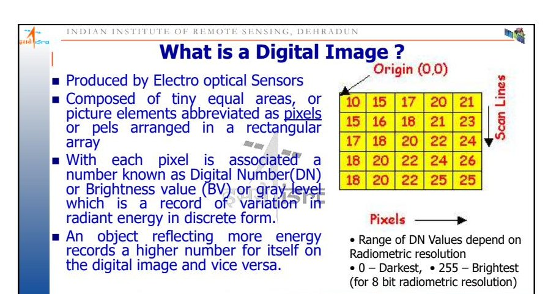

Everything in this track — correction, enhancement, classification — operates on one underlying object: a grid of numbers. Understand that grid, in code, and the rest of Digital Image Processing stops feeling abstract.
A digital image is a two-dimensional array of pixels ("picture elements"), where each pixel holds a Digital Number (DN) proportional to the energy the sensor recorded at that ground location. A multispectral image is several such grids stacked together — one per band.
Because numbers can be processed by algorithms. Once a satellite scene is "just" a NumPy array, every technique in this course — contrast stretching, filtering, NDVI, classification — becomes ordinary array arithmetic you can run and inspect.
Satellite images are usually distributed as GeoTIFFs — files that store both the pixel grid and the geographic metadata (coordinate system, resolution, extent) needed to place every pixel on the map. Python's rasterio library reads them directly into NumPy arrays.

import rasterio
import numpy as np
with rasterio.open("sentinel2_scene.tif") as src:
image = src.read() # shape: (bands, rows, cols)
profile = src.profile # CRS, transform, dtype, nodata...
print("Shape:", image.shape) # e.g. (4, 2048, 2048) — 4 bands, 2048x2048 pixels
print("Data type:", image.dtype) # e.g. uint16 — this is the radiometric resolution
print("DN range:", image.min(), "–", image.max())
print("CRS:", profile["crs"]) # the coordinate reference system
# A single pixel's spectral signature: DN in every band, at row=500, col=800
pixel_signature = image[:, 500, 800]
print("Pixel signature:", pixel_signature)A raw DN is not a physical measurement by itself — it's whatever integer the sensor's electronics produced for that photon count, scaled by the bit depth (RS.4). Level-2 / L2A products have already been converted to physically meaningful units (surface reflectance, typically scaled 0–10000 to keep integers), which is exactly why RS.6 told you to always reach for L2 data.
A raw DN is like a photo's brightness slider value in an editing app — "72" doesn't mean anything on its own; it depends on that camera, that lighting, that app's scale. Surface reflectance (L2) is more like a percentage: "this surface reflects 23% of the light that hit it," a fact about the ground, not about the sensor. That's why you can compare L2 reflectance values from two completely different satellites, but comparing raw DNs from two different sensors is meaningless.
Each band on its own is a greyscale image. Colour only appears once you choose three bands and assign them to your display's Red, Green and Blue channels. Which three bands you choose is a deliberate decision — not just "how it looks," but which physical property you want to see (RS.5 covered why NIR→red false colour is so common).
import numpy as np
import matplotlib.pyplot as plt
# image bands, in order: [Blue, Green, Red, NIR]
blue, green, red, nir = image[0], image[1], image[2], image[3]
def normalize(band):
return np.clip((band - np.percentile(band, 2)) /
(np.percentile(band, 98) - np.percentile(band, 2)), 0, 1)
# True colour: R-G-B mapped normally
true_colour = np.dstack([normalize(red), normalize(green), normalize(blue)])
# False colour infrared: NIR-R-G — vegetation glows red
false_colour = np.dstack([normalize(nir), normalize(red), normalize(green)])
fig, ax = plt.subplots(1, 2, figsize=(12,6))
ax[0].imshow(true_colour); ax[0].set_title("True Colour (R-G-B)")
ax[1].imshow(false_colour); ax[1].set_title("False Colour (NIR-R-G)")Notice the normalize() function above clips to the 2nd–98th percentile instead of the true min/max. That's not arbitrary — it's exactly the contrast stretch concept you'll formalize in IP.3. A handful of very bright or very dark outlier pixels would otherwise wash out the whole display.
A grid of cells, each with a value — satellite imagery, elevation models, classified land-cover maps. Great for continuous phenomena (temperature, reflectance) and for anything a sensor directly measures. Everything in this course is raster.
Points, lines and polygons with attached attributes — a road network, administrative boundaries, field parcels. Great for discrete, well-defined objects. You'll often overlay vector boundaries (a district outline, a farm parcel) on top of raster imagery for analysis.
rasterio — pixel values and geographic location together.